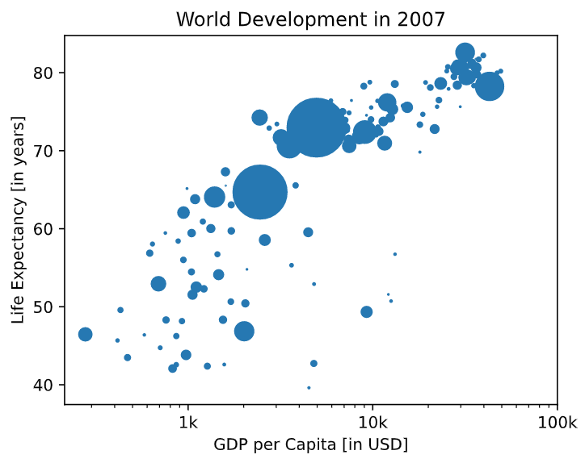

0. Matplotlib
0-0. Basic plots with Matplotlib
-
Matplotlib
-
import matplotlib.pyplot as plt#tells Python what to plot and how to plot it
year = [1950, 1960, 1970, 1980]
pop = [2.519, 3.692, 5.263, 6.972]
plt.plot(year, pop)
plt.show()
-
-
Scatter plot
-
import matplotlib.pyplot as plt
year = [1950, 1960, 1970, 1980]
pop = [2.519, 3.692, 5.263, 6.972]
plt.scatter(year, pop)
plt.show()
-
-
to put the x-axis on a logarithmic scale
-
plt.scatter(gdp_cap, life_exp)
plt.xscale('log')
plt.show()
-
0-1. Histogram
-
Histogram
- Explore dataset
- Get idea about distribution
- default number of bins: 10
-
Matplotlib example
-
import matplotlib.pyplot as plt
help(plt.hist)
values = [0, 0.6, 1.4, 1.6, 2.2, 2.5, 2.6, 3.2, 3.5, 3.9, 4.2, 6]
plt.hist(values, bins=3)
plt.show()
-
-
example: Population pyramid
-
plt.show(): displays a plot -
plt.clf(): cleans it up so you can start afresh.
0-2. Customization
-
Data visualization
-
Many options
- Different plot types
- Many customizations
-
Choice depends on
- Data
- Sotry you want to tell
-
Many options
-
Axis labels, Title, Ticks, ...
-
import matplotlib.pyplot as plt
year = [1950, 1951, 1952, ... ,2100]
pop =[2.538, 2.57, 2.62, ... ,10.85]
plt.plot(year, pop)
#Add more data
year = [1800, 1850, 1900]+year
pop = [1.0, 1.262, 1.650]+pop
plt.xlabel('Year')
plt.ylabel('Population')
plt.title('World Population Proejction')
plt.yticks([0, 2, 4, 6, 8, 10], ['0', '2B', '4B', '6B', '8B', '10B'])
plt.show()
-
-
scatter plot에서 bubble size 옵션
-
plt.scatter(gdp_cap, life_exp, size=pop)

-
-
np.array(): creates a numpy array from the list
np_pop = np.array(pop)-
np_pop * 2-> each array element will be doubled